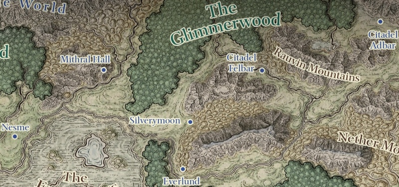

Rise of the King
Écrit par R. A. Salvatore, publié en Septembre 2014.
AVERTISSEMENT
Cette page révèle certaines informations qui pourraient gâcher la lecture du roman. Si vous pensez lire ce livre dans un futur proche, mieux vaut ne pas parcourir ce résumé !
 1484. Alors que les Marches d'Argent sont plongées dans une sorte de nuit permanente par un sort lancé par les elfes noirs de Menzoberranzan, Tiago Baenre, le magicien Ravel Xorlarrin, Tos'un Armgo et sa fille Doum'wielle ont pour mission de lancer tous les orcs de Many-Arrows dans une guerre contre les humains, les elfes et les nains de la région. Pour y parvenir, ils empoisonnent le roi Obould, jugé trop pacifique maintenant, exilent son héritier, et soutiennent l'orc Hartusk comme successeur d'Obould en tant que Seigneur de guerre. D'un autre côté, la Mère matrone Quenthel Baenre rallie le grand dragon blanc Arauthator et son fils Aurbangras à sa cause, et son frère Gromph fait de même avec les géants du givre. Déjà des hordes d'orcs, des worgs montés sur des loups sanguinaires et quelques géants du givre se profilent au nord de Castelmithral et y affrontent son armée. Les renforts nains d'Adbar menés par leur roi Bromm rencontrent d'autres de ces créatures dans le Val Froid, entre Bois Froid et les Rauvin Moutains, accompagnés cette fois par le dragon blanc Arauthator lui-même chevauché par Tiago. Le roi nain ne survivra pas au combat. Nous sommes maintenant le premier jour de Flamerule de 1484 lorsque, devant la menace, les trois rois nains se réunissent en conseil. Les orcs font le siège de Sundabar, à deux jours de marche de Felbarr, et les humains leurs demandent d'intervenir. Mais les nains décident de se concentrer sur la protection mutuelle de leurs forteresses par les grands tunnels qui les interconnectent, et de ne pas se risquer à l'extérieur. La confédération des Marches d'Argent vient de voler en éclats.
1484. Alors que les Marches d'Argent sont plongées dans une sorte de nuit permanente par un sort lancé par les elfes noirs de Menzoberranzan, Tiago Baenre, le magicien Ravel Xorlarrin, Tos'un Armgo et sa fille Doum'wielle ont pour mission de lancer tous les orcs de Many-Arrows dans une guerre contre les humains, les elfes et les nains de la région. Pour y parvenir, ils empoisonnent le roi Obould, jugé trop pacifique maintenant, exilent son héritier, et soutiennent l'orc Hartusk comme successeur d'Obould en tant que Seigneur de guerre. D'un autre côté, la Mère matrone Quenthel Baenre rallie le grand dragon blanc Arauthator et son fils Aurbangras à sa cause, et son frère Gromph fait de même avec les géants du givre. Déjà des hordes d'orcs, des worgs montés sur des loups sanguinaires et quelques géants du givre se profilent au nord de Castelmithral et y affrontent son armée. Les renforts nains d'Adbar menés par leur roi Bromm rencontrent d'autres de ces créatures dans le Val Froid, entre Bois Froid et les Rauvin Moutains, accompagnés cette fois par le dragon blanc Arauthator lui-même chevauché par Tiago. Le roi nain ne survivra pas au combat. Nous sommes maintenant le premier jour de Flamerule de 1484 lorsque, devant la menace, les trois rois nains se réunissent en conseil. Les orcs font le siège de Sundabar, à deux jours de marche de Felbarr, et les humains leurs demandent d'intervenir. Mais les nains décident de se concentrer sur la protection mutuelle de leurs forteresses par les grands tunnels qui les interconnectent, et de ne pas se risquer à l'extérieur. La confédération des Marches d'Argent vient de voler en éclats.
Revenant à la politique de Menzoberranzan, Quenthel place sa soeur Sos'Umptu à la tête d'Arach-Tinilith et décrète cette position comme ayant place au conseil des Huit, s'assurant quasiment d'avoir ainsi 7 voix contre 2 aux votes. Au même moment, Jarlaxle passe un accord avec Gromph. Son compagnon psionique Kimmuriel lui enseignera sa magie, et en échange l'archimage le laisse retourner à Luskan reprendre le contrôle de Bregan D'aerthe et participer aux événements à venir en surface. Et c'est ainsi que quelques temps plus tard Jarlaxle se retrouve avec la clerc naine Ambergris et le moine Afafrenfere, qui le considèrent comme leur ami pour leur avoir sauvé la vie un jour, leur demandant où se trouvent Effron et Entreri. Puis l'elfe noir, qui a laissé Ambergris et Afafrenfere au monastère de la Rose Jaune, continue son voyage jusqu'à Helgabal en Damarie, où il retrouve deux sœurs dragons de cuivre de sa connaissance, Ilnezhara et Tazmikella, et les convainc de l'accompagner aux Marches d'Argent. De son côté Afafrenfere se voit confier une mission par le chef du monastère, le maître Perrywinkle Shin, et par le grand maître des fleurs Kane, en échange de sa réintégration dans l'ordre. Le moine devra accompagner Jarlaxle, car Kane anticipe de grands événements et pense que le chef de Bregan D'aerthe sera au cœur de ceux-ci. Et pour rester informé en temps réel, Kane donne à Afafrenfere une gemme magique sertie sur un serre-tête. L'elfe noir retrouve alors peu après Ambergris et Afafrenfere, auxquels ils présentent les deux dragons sur lesquels le trio s'envole.
Pour leur part, les compagnons du Hall quittent Port Last pour rejoindre les magiciens de Longueselle. Un grand prêtre y délivre l'esprit de Pwent de sa malédiction, mais par magie son âme libérée rejoint la corne de Wulfgard. Cette corne, qui auparavant permettait au barbare de conjurer jusqu'à dix berserkers, permet maintenant à Bruenor d'invoquer le nain Pwent. Puis le groupe prend la direction de Castelmithral, passe par la tribu barbare des Griffons, amène avec lui de force une nouvelle recrue, Giselle, pour finalement rencontrer un énorme camp d'orcs marchant sur la ville de Nesmé. Régis pénètre alors dans le campement déguisé en orc grâce à son béret magique, puis passe ensuite sous l'apparence d'un gobelin, et découvre la correspondance entre un shaman gobelin, qui semble diriger cette armée, et Tos'un Do'Urden. Pendant ce temps une patrouille d'orcs et d'ogres accompagnés d'un géant du givre affronte le reste du groupe. Bruenor invoque Pwent, Giselle apporte son aide, et les compagnons finissent par remporter la lutte, mais au prix de lourdes blessures. Régis retourne au camp ennemi pour provoquer l'attaque de la petite ville avant que n'arrivent les renforts orcs, pendant que tous les autres se hâtent de rejoindre Nesmé, où ils rencontrent le nain Athrogate, un homme de Jarlaxle qu'ils connaissent. Durant vingt et un jours, les habitants parviendront à repousser tous les assauts, puis les compagnons apprennent que Lunargent et Sundabar sont également assiégées. Ils décident alors avec Athrogate de rejoindre Castelmithral pour y chercher de l'aide en empruntant les tunnels souterrains de l'Outreterre. Arrivant près de la forteresse naine, Drizzt et ses compagnons tombent dans une embuscade et le groupe est séparé. Tandis que la majorité rejoignent les nains de la forteresse et que Bruenor se fait connaitre, Wulfgar est fait prisonnier et Régis se retrouve dans le complexe du côté des orcs et des gobelins. Le halfelin parvient toutefois à faire évader son ami barbare.
Le 6 d'Eleint 1484, la cité de Sundabar est en flammes, son roi Firehelm est décapité par Tiago Baenre, et orcs, gobelins, ogres et géants entrent dans la ville. Les survivants se réfugient dans les cavernes sous la citadelle de la cité qui est rebaptisée par les vainqueurs Hartusk Keep. Tiago apprend ensuite que Drizzt est à Nesmé et s'envole aussitôt à dos de dragon vers la petite ville. Cette dernière finit par tomber aux mains de ses assaillants, son chef est abattu, Tiago s'autoproclame duc de Nesmé, et Giselle est forcée d'avouer à celui-ci que Drizzt n'est plus ici mais qu'il est parti chercher de l'aide à Castelmithral avec ses compagnons.
♦
Les 8 royaumes des Marches d'Argent
- Castelmithral. Cette forteresse naine est dirigée par le roi Connerad Brawnanvil.
- Felbarr. Cette citadelle naine est dirigée par le roi Emerus Warcrown.
- Adbar. Cette citadelle d'environ 20 000 nains est dirigée par les rois jumeaux Harnoth et Bromm. Ce dernier, Bromm, est tué par l'orc Hartusk lors d'un combat.
- Bois Chatoyant. Anciennement nommé Boilune, cette communauté elfique est dirigée par Sinnafein, mère de Doum'wielle.
- Lunargent. Cette ville, dirigée par Lord Hornblade, est assiégée par les orcs.
- Sundabar. Cette ville était dirigée par le roi Firehelm, mais celui-ci a été décapité lors de la prise de la cité par les orcs. La ville comptait 25 000 habitants (2/3 humains, 1/3 nains) mais environ 10 000 personnes ont été tuées durant les combats et les survivants ont fui.
- Everlund. Ville la plus au sud, c'est la seule épargnée pour le moment.
- Many-Arrows. Ce royaume orc anciennement dirigé par le roi Obould est maintenant sous la coupe du seigneur de guerre orc Hartusk, Obould ayant été empoisonné par les drows.
